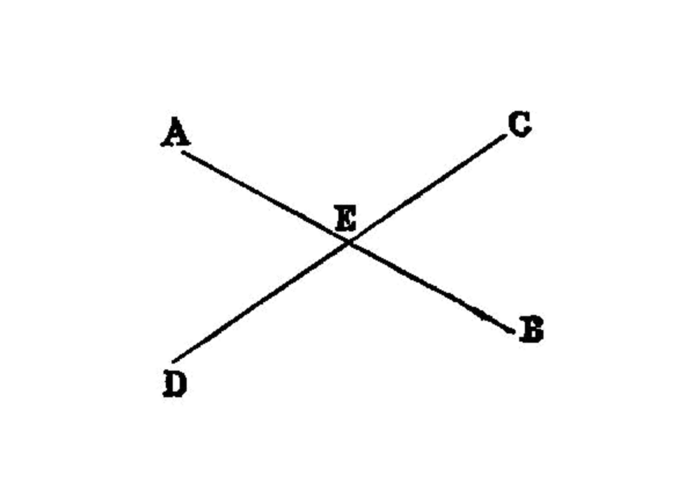

opposing angles of intersecting lines are equal
{kind=link}
I.15
If two straight lines cut one another, they make the vertical angles [1] equal to one another.
—Euclid
For let the straight lines AB, CD cut one another at the point E;
I say that the angle AEC is equal to the angle DEB,
and the angle CEB to the angle AED.
For, since the straight line AE stands on the straight line CD, making the angles CEA, AED,
the angles CEA, AED are equal to two right angles [I.13]
Again, since the straight line DE stands on the straight line AB, making the angles AED, DEB,
the angles AED, DEB are equal to two right angles. [I.13]
But the angles CEA, AED were also proved equal to two right angles;
therefore the angles CEA, AED are equal to the angles AED
DEB. [I.post.4] and [I.cn.1] Let the angle AED be subtracted from each; therefore the remaining angle CEA is equal to the remaining angle BED. [I.cn.3]
Similarly it can be proved that the angles CEB, DEA are also equal.
Therefore etc.
porism
[From this it is manifest that, if two straight lines cut one another, they will make the angles at the point of section [2] equal to four right angles.
references
[I.13]: /I.13 “Book I - Proposition 13” [I.post.4]: /I.post.4 “Book I - Postulate 4” [I.cn.1]: /I.cn.1 “Book I - Common Notion 1” [I.cn.3]: /I.cn.3 “Book I - Common Notion 3”